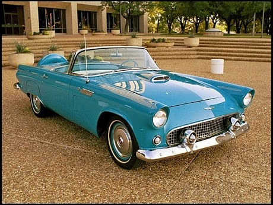
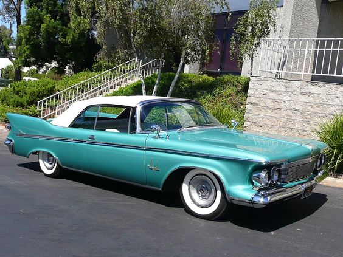
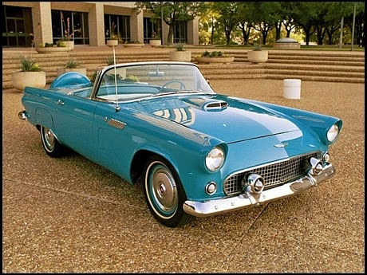
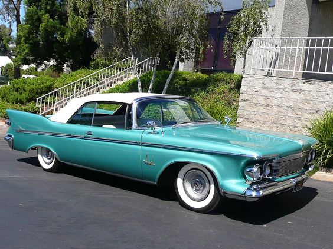
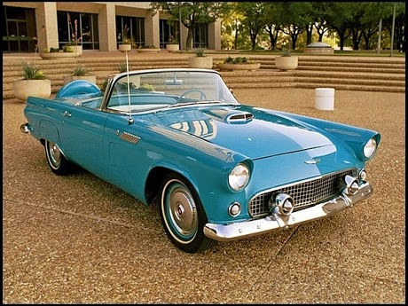
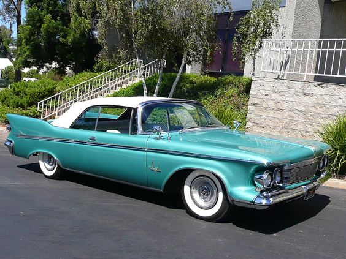

Classic cars all have a story to tell about what they have accomplished in their lives, where they have been, and why they are still in operation. The cracks in the leather or the scratches on the paint are seen by some as imperfections, but to aficionados of classic cars, these are a record of the car’s history, adding to its character and chronicling its life. Automobile manufacturers play heavily on the pedigree and heritage of their brands, but classic cars are the real-life objects that defined that heritage and established the reputation of the brand in the first place.
Then there’s the individualism. Owning any new car is easy—all it takes is money, and with cheap credit and easy finance, even that is not very difficult any longer. Classic cars however, are no longer in production and are therefore inherently limited in supply, consequently holding a far greater and ever increasing level of exclusivity. No amount of money will get you a brand new Ferrari Daytona, for example, and even if you want an old one, you still have to find someone, somewhere who is willing to sell you theirs.
The greater effort of acquiring, owning and maintaining a more exclusive product prompts questions of the owner’s passion for that product and his or her motivation for going to these additional lengths when owning a new car is so much simpler and easier. A culture has emerged surrounding classic cars, comprising of events such as classic rallies, road trips, historic racing, and classic car shows. Owners of classic cars gain great satisfaction from exhibiting their cars at these events and use them as a means to show off not only the car but also their own personality and taste.
Purchasers of modern cars typically calculate their ownership period of anything between 6 months and 5 years before they move on to something newer and better, but classic car owners see it the opposite way: the cars will exist beyond their tenure, and they are merely temporary custodians of something that has a life beyond theirs. So will this continue, or is it just a passing trend? New cars are likely to get better and better with each passing year, so the 3 years old car that you have today is likely to be already outclassed by the new model just released. This is reason why classic car is always loved.

